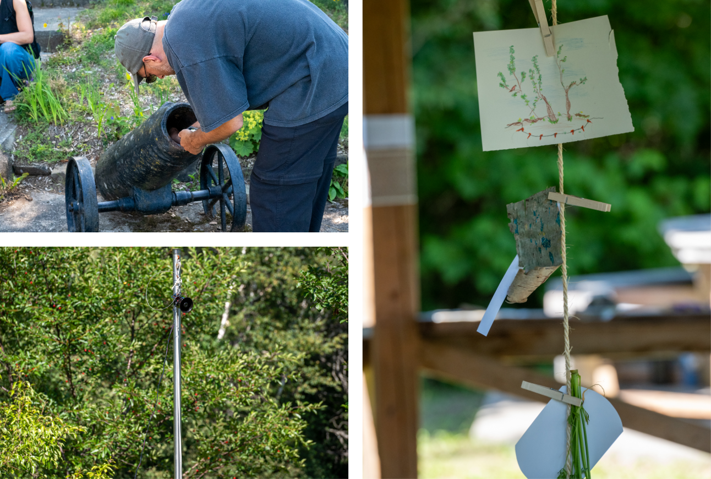

Réalisations artistiques
-
Échos du vivant, 2026
Parcours sonore in situ. En collaboration avec Myriam Boucher, Nicolas Bourgeois, AC Riznar, Ludovic Jolicoeur et Pomme M Presne-Poissant.

Photo : Mathieu Gosselin -
Deer Lake, 2025-2026
Performances sonores contextuelles, lectures-performances, musique électronique en direct et archives documentaires.
-
Ateliers de cocréation Son + Lieu, 2023-2026
Performances sonores contextuelles.
-
Tasiujaq 93 (Distance), 10:30, 2025
Pour mezzo-soprano et ensemble de 15 musicien·nes.
-
Montréal rivières, 61:00, 2025
Électroacoustique. Album en collaboration avec Myriam Boucher, Gabriel·le Caux et Antonin GougeonMoisan.
- 2. « Rivière 1 », 2:45
- 6. « Rivière 4 », 5:34
- 10. « Rivière 7 », 4:09
-
Quelque part…, 12:00, 2025
Pour percussions et électronique.
-
assemblage… Chabanel, 08:04, 2023 ; 2025
Installation audiovisuelle.
-
rentrouvert, laisser ouvrir, 30:00, 2024
Performance-installation.
-
Réservoir V (présence), 11:19, 2023
Électroacoustique et performance.
-
fenêtre… assemblage, 2023
Performance-installation.